Font, size and style
Font, size and styleFor an invoice/receipt form, the information will usually come from the Detail fields. For a statement or remittance advice, it will usually come from the Transaction fields. These are the records that repeat in the list.
If you want to refer to the calculation result from another column or from a calculation box elsewhere on the form, you may want to give the column a meaningful name in the Result field
If you want to refer to the column from outside the list, you will need to name the list using the List Options button.
The column heading is only displayed if the List Heading is exposed.
The column heading can be include text expressions within << and >> that will be calculated at runtime.
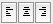
Remember than columns showing figures should have the Word Wrap option off for correct decimal alignment. Turn the Word wrap option on if you want the text in the column to be wrapped over multiple lines. The data in any non-word-wrapped columns to the right of a word-wrapped column will align with the last line of text in the word-wrapped column.To change the text alignment of a column:
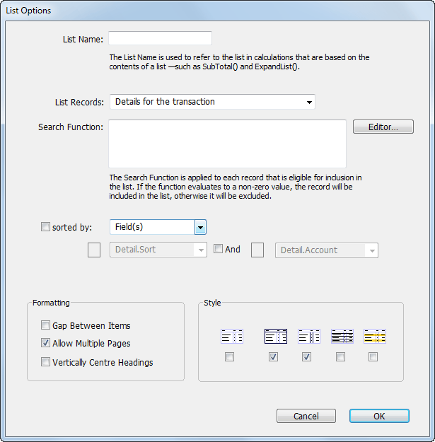
Use the List Options dialog box if you want to:
Name the list so that its contents can be accessed from calculation boxes;
Exclude records from appearing in the list using a search function;
Choose a different list format;
Change the formatting options for the list;
List records from a different file (e.g. detail lines on a statement) or
List data from some other source, such as a table or external database.
To open the List Options window:
Highlight or activate the list
Right-click on the list and choose List Options from the menu, or Choose Edit>Form>List Options, or press Shift-Ctrl-L/Option-⌘-L
If you need to name the list, type a name into the List Name field
Highlight the column by clicking on it
The alignment buttons
You must name a list if you want to extract summary information from the
list using the ExpandList or the SubTotal function. The name can be up to 31 characters, cannot include any spaces, and must not begin with a digit.
Choosing a file different to the default makes all records from that file available. To filter them based on the context in which the form is being printed, use a Relational Search.
Calculated Row Count: Select this if you are drawing your data from a source other than a MoneyWorks list. The number of rows to output is then entered instead of a search expression.
search formula into the Search Function box
The search function that you supply will be evaluated for each record that MoneyWorks selects for inclusion in the list. If it evaluates to False (or zero) for a record, then that record will not be printed in the list.
For example, if you want to exclude the freight item from the list in a product invoice and place it in a separate box below the list, you might use a search function such as:
Detail.StockCode <> "FREIGHT"
which specifically excludes any lines with a product named “Freight”, or:
Lookup(Detail.StockCode, "Product.Type") != "S"
which excludes any products which are “Ship Methods” from the list, or:
="[Transaction:NameCode=`" + Name.code + "`][Detail]"
would find all detail lines for the currently printing statement name. Note that in this situation the search expression will be different for each statement, and hence must be calculated each time. Thus when we are printing a statement for SMITH, we get a search expression of:
[Transaction:NameCode=`SMITH`][Detail] Whereas for BROWN we get: [Transaction:NameCode=`BROWN`][Detail]
Clicking the Editor button displays the formula editor window which can be used to help create the search function.
Note: If you are using your own data source and the Calculated row count option in the List Records selector, you should set the search expression to the number of rows to print. In the list itself, use the variable index to determine the row number being printed. Note that this starts at zero (so row one has index 0, row 2 has index 1 and so on).
Two types of sort are available.
Sorted by Fields: Select the sort fields for the list from those in the pop-up menu (these are the fields in the selected MoneyWorks list). The sort can be ascending or descending, and two levels of sort are available.
Sorted by Calculation: The calculation is evaluated for each row in the list, and the list is sorted according to the result (thus the calculation should return something different for each row). The type of sort (i.e. numeric, date or text) is determined by the type returned when the sort expression is applied to the first row—you should ensure that the calculations returns the same type for all rows (i.e. they should all return a numeric value, a date or text, but not a mixture). No sort is done if the result of the calculation is not one of these types.
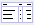
No box or column separation lines. Use this format if you are printing on pre- printed form stationery. The other options are turned off if this option is selected.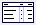
Bounding box and heading separation line. Use this to draw a frame around the list. The border colour and pen width for the list are used to draw the lines.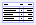
Column separators. Use this to draw a vertical line between columns in the list. The border colour and pen width for the list are used to draw the lines.Record separators. Use this to draw a horizontal line between each record in the list. The colour and pen width for the list are used to draw the lines.
Pyjama stripes. Use this to show alternating lines of text in the list a different colour. The pyjama stripes use the fill colour and transparency, with one stripe per line of text.
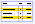
If you want a blank line between each record, click the Gap Between Items check boxNote that the Leading setting also affects list spacing.
This option is on by default.
If you are showing the list heading section and want your headings vertically centred, set the Vertically Centre Headings check box
This list option will centre single-line headings within the heading region of a list object, giving a much tidier layout. If you need headings to wrap over several lines, then leave this option off.
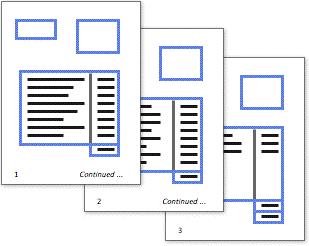
Lists and Multi-page FormsThere may be more information to be displayed in a list box than the size of the list box will allow. If the list’s Allow Multiple Pages option is set, MoneyWorks will automatically print extra pages of the form until all of the list data has been output
Normally, all non-list objects are simply
repeated on the extra pages. You can, however, control the visibility of these items based on whether the page is the first one or the last one. This feature is illustrated in the example above, which has “Continued...” printed on every page other than the last one and shows subtotals on these pages. The last page has a grand total and GST total. See Page-based Visibility.
If you want a calculation to be different for each page, you need to set the Always Calculate option for the calculation, otherwise it will be calculated only once before the first page is printed.
To insert a product image into a list (typically an invoice or quote), the calculation for the column needs to resolve to “<<prodimg:code>>”, where code is the product code of the item to print. Thus the following formula in a list column for an invoice-type form will display the item’s picture if any.
="<<prodimg:"+detail.stockcode+">>"
Note that Word Wrap for the column should be on.
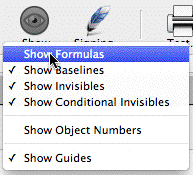
The Show toolbar button activates a menu containing options affecting the display and operation of the Forms Designer. Most of the options are turned on by default, as indicated by the check mark next to the option. To turn an option off, choose the option from the Options sub-menu.Show Formulas: When this is on, calculation boxes and list columns will be displayed
on screen with the formula text in the box. When this option is off, the calculation result name or column name is shown instead.
Show Field Baselines: When this is on, the text baseline for calculation boxes is drawn. This is to help with lining up objects whose text size or font differs.
Show Invisibles: When this is off, objects whose global visibility attribute is Always Invisible will not be drawn on-screen. The objects can still be selected and manipulated.
Show Conditional Invisibles: When this is off, objects whose global visibility attribute is Conditional will not be drawn on-screen. The objects can still be selected and manipulated.
Show Object Numbers: When turned on, the number of each object is displayed in the top left hand corner of the object. This is useful for finding an object with a run-time error—object numbers are reported in the errors dialog box when you try to print a form that has errors.
Show Guides: When on, alignment guides will appear on screen when you move or resize objects and one of their edges is aligned with the edge of another object. You will also get alignment guides when drawing lines if they are strictly horizontal or vertical.
Each object on the form has graphical properties. Not all of the properties apply to all kinds of objects. The following table shows which properties can be changed for each type of object.
Rectangles, text boxes, calculation boxes and lists have both a border and an interior. The border colour, border transparency and pen width are used for drawing the border of these objects, and the fill colour and fill transparency are used for drawing the interior.
The border and fill attributes can be set from the tool palette or from commands in the Edit>Form menu.
Border colours apply to all objects except pasted pictures. Fill colours apply to all objects except pasted pictures and lines. To change the Border or Fill colour:
| Property |
|
|
Text |
|
List | Pic |
|---|---|---|---|---|---|---|
| Border Colour |
|
|
Yes |
|
Yes | |
| Border Transparency |
|
|
Yes |
|
Yes | |
| Fill Colour |
|
Yes |
|
Yes | ||
| Fill Transparency |
|
Yes |
|
Yes |
|
|
| Pen Width |
|
|
Yes |
|
Yes | |
| Visibility |
|
|
Yes |
|
Yes |
|
| Shadow |
|
|
Yes |
|
||
| Text Font | Yes |
|
Yes | |||
| Text Size | Yes |
|
Yes | |||
| Text Style | Yes |
|
Yes | |||
| Text Colour | Yes |
|
Yes |
Fill and Line set colour buttons
All of these are set using the commands in the Edit>Form menu—the Text style options are set using the Type Style command or the Type Style Toolbar button.
Whenever you set one of these properties (or formats) for an object, the format that you choose becomes the default and will then be used for any new objects that you create. (The default fill and border properties are not applied to new text and calculation objects).
If you just want to change the default border or fill colour, you don’t need to select any objects.
The colour picker for your platform will be displayed.
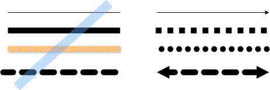
Variations on a line: Use different colours, widths, transparency, shadow, arrows, dashes and end styles to achieve the perfect line.
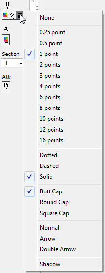
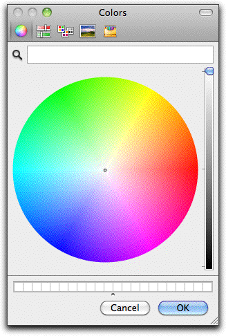
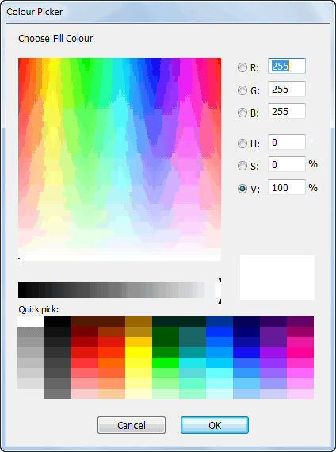
Changing the Pen Width and PatternMac colour picker
Windows colour picker
Pen widths and patterns (solid, dotted or dashed) apply to all objects except pasted pictures. To these:
If you just want to change the default pen width, you don’t need to select any objects.
The objects will be redrawn with the new pen width. The selected pen width becomes the default for newly created objects.
Note: The Butt, Round and Square Cap will affect the ends of any dashes or dots in dashed or dotted lines.
The objects will be redrawn with the new properties. The selected border or fill colour becomes the default for newly created objects.
Any line (but not rectangle) can be converted into a single or double arrow by selecting the line and choosing one of the Arrow options from the Pen Attributes menu.
Rectangles, lines, images and text objects (but not calculation boxes or lists) can have a subtle shadow added for that added je ne sais quoi. To add a shadow:
Select the object(s)
Choose Shadow from the Pen Attributes menu in the Tool Palette
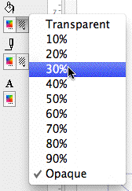
TransparencyBorder and fill colours, as well as images can have varying levels of transparency. To change the transparency:
If you just want to change the default border or fill transparency, you don’t need to select any objects.
If you just want to change the default value for one of the properties, you don’t need to select any objects.
Click the Type Style Toolbar button or Choose Edit>Forms Designer>Type Style
The Type Style window will be displayed
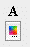
Make the appropriate settings and click OKTo change the text colour for a selection of objects:
The transparency for the items will be altered.
Calculation boxes, Lists and Text boxes can all have their text font, size, style and colour varied. You need to select the text object (and not just highlight some of the text) to apply these settings.
Click the Text Colour button
The colour picker will be displayed.
The text will change colour when the colour picker closes
The Text Colour tool
You can set the text alignment (Left, right or centred) for a calculation box or a text box by highlighting the object and
The alignment
buttons
You can control the visibility of individual objects on the form. Visibility attributes can be global (i.e they apply for all pages of a multi-page form) or they can be page-based (or a mixture of both).
clicking the appropriate alignment button. You can’t change the text alignment for an entire List box—you need to activate the list and set the alignment for each column separately.
Font, size and styleTo change the text attributes for a selection of objects:
The Type Style
There are three kinds of global visibility property:
Always Visible: the object will always be printed on the form.
Always Invisible: the object will never be printed. Use this option if you want to have a calculation box that you don’t want to be printed.
toolbar button
Conditional Visibility: the object will only be printed if a formula that you supply evaluates to TRUE (i.e. to any number except 0)
To change the global visibility of a selection of objects:
Choose Edit>Forms Designer>Visibility, or right click and select Visibility from the contextual menu
The Visibility dialog box will open
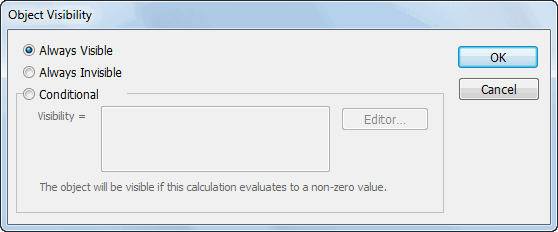
The current visibility settings for the selected objects will be shown in the
Click OK to accept the changes
You can control whether an object is visible on each page of a multi-page form.
For example, you may have a statement form whose list has the Allow Multiple Pages attribute set. This form may conceivably be printed over several pages if the customer for whom it is printed has enough transactions. On this form, you may want to have the word “Continued...” printed at the bottom of each page except the last one. Or you may want the phrase “End of Statement” printed on just the last page; or you may want a subtotal printed on each page with a grand-total on the last page only.
All of these things are possible using the settings in the Attributes (Attr) button on the tools palette.
To set Page-based Visibility Attributes:
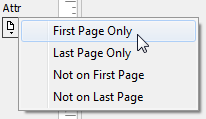
Select the objectsdialog box. If there is more than one object selected, and the settings for all the selected objects are not the same, then none of the options will be selected in the dialog box. If you do not wish to change the visibility settings
The Attributes
button
you should click Cancel.
If you choose Conditional visibility, the text box labelled “Visibility =” will be enabled. Into this box you should type a calculation that evaluates to true when the object is to be visible and false when it is to be invisible.
Example: To have an object appear only if the transaction value is negative, you would type
Gross < 0
You can click the Editor button and use the calculation editor to help construct your visibility calculation.
The attribute is set for the objects. No visible change will be apparent for the objects. However, if you click the Attributes button again, the attribute item will be checked.
The Edit>Forms Designer>Arrange sub-menu contains commands for ordering and aligning objects. For convenience, each of the commands in the Arrange sub-menu has an icon button equivalent in the tools palette.
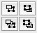
Ordering Objects: You can control the front-to-back ordering of objects. When objects are drawn on the page, they are drawn from the back to the front. If objects overlap, the one in front will be drawn on top of the one behind. As a shortcut to using the commands in the Arrange sub-menu, you can use the ordering control icons in the tool palette.As an example, you may want a coloured box to be drawn behind a field on a form, but you have already made the field. When you draw the box, it obscures the field, as shown below at left. The solution is to select the coloured box and use the Send to Back command.
|
|
|
|---|
If Show Object Numbers is turned on, you will notice that the object number changes when the order changes.
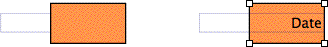
Ordering toolsAligning Objects: For a tidy form, the objects on it should, where appropriate, be neatly aligned. There are special commands for quickly aligning a selection of objects.
To align the edges or centres of a group of objects:
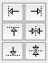
Alignment tools